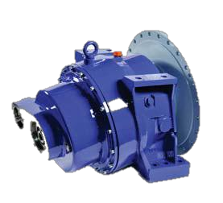

Solutions
Industrial support built around continuity.
From preventive maintenance to team training and project documentation, Hajjanco helps industrial operations perform with greater confidence.
01 · SOLUTION
Operation & Maintenance
Structured technical support for industrial systems and equipment, from planned service to fault response and operational reporting.
- Preventive and emergency maintenance
- Scheduled maintenance programs
- Equipment operation and technical reporting
- Troubleshooting, modification and upgrading
02 · SOLUTION
Industrial Training
Practical and theoretical instruction designed to strengthen end-user understanding, safe operation and daily equipment care.
Electrical SystemsHydraulicsPneumaticsP&ID ReadingMachine SystemsSafety Operations
03 · SOLUTION
Engineering & Project Documentation
Clear, professional documentation for concrete-plant projects, contractors, consultants and site teams.
- Feasibility studies and project studies
- Method statements and risk assessments
- Technical and design submittals
- Safety, operational and environmental plans

04 · SOLUTION
Spare Parts & Machinery Solutions
A practical approach to parts availability, alternative solutions and machinery support across the equipment lifecycle.
- Annual spare-parts consignment planning
- Dead-stock and replacement solutions
- System modification and upgrades
- Industrial machinery and component supply